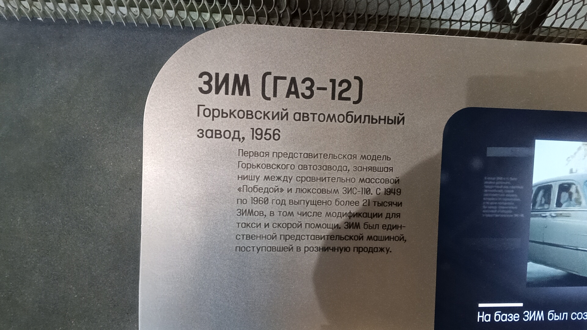

ЗИМ (ГАЗ-12)
ЗИМ (ГАЗ-12) — первая представительская модель Горьковского автозавода, занявшая нишу между сравнительно массовой «Победой» и люксовым ЗИС-110.
С 1949 по 1960 год выпущено более 21 тысячи ЗИМов, в том числе модификации для такси и скорой помощи. ЗИМ был единственной представительской машиной, поступившей в розничную продажу.
Основные данные
| Модель | ЗИМ (ГАЗ-12) |
| Производитель | Горьковский автомобильный завод (ГАЗ) |
| Годы выпуска | 1949–1960 |
| Год выпуска экспоната | 1956 |
| Класс | Представительский |
| Всего произведено | более 21 000 экземпляров |
| Модификации | Такси, скорая помощь |
| Текущее состояние | Не эксплуатируется (музейный экспонат) |
История
Начало выпуска
На Горьковском автомобильном заводе стартовало производство представительского автомобиля ЗИМ. Модель стала промежуточным звеном между «Победой» и правительственными ЗИСами.
Год выпуска экспоната
Именно этот экземпляр сошёл с конвейера в 1956 году. К этому времени ЗИМы уже зарекомендовали себя как комфортабельные и надёжные машины.
Служба и продажа
За 11 лет было выпущено более 21 тысячи машин. Помимо государственных учреждений, ЗИМы можно было купить и в розницу — это была единственная представительская модель в свободной продаже. Также выпускались версии для такси и скорой помощи.
В экспозиции музея
Сегодня этот автомобиль представлен в Музее Транспорта Москвы. Черный лимузин по праву считается одним из символов советского автомобильного дизайна 50-х годов.
Интересные факты
Доступный люкс: ЗИМ был единственным представительским автомобилем в СССР, который можно было официально купить за деньги. Однако позволить себе такую роскошь могли лишь немногие — машина стоила как несколько обычных «Побед».
Фотогалерея

Черный представительский лимузин на подиуме.

Описание модели.
Нажмите на фото для увеличения
«ЗИМ был единственной представительской машиной, поступившей в розничную продажу».